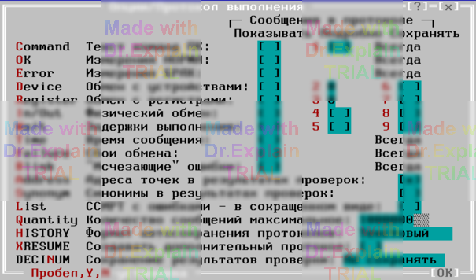

5.2 Меню Options/Report «Протокол выполнения»
Опции меню «Протокол выполнения» (рисунок 1) управляют тем, какая информация сохраняется и отображается в окне протокола выполнения.

Информация делится на три группы:
- Сохраняемая и показываемая всегда (документирующие сообщения ПК, имена и результаты тестов, ошибки в ОК, нарушения режимов контроля, «фатальные» сбои).
- Сохраняемая всегда, показываемая по требованию (текст и алгоритмы команд ПК, время сообщений, «исчезающие» ошибки, сбои обмена).
- И сохраняемая, и показываемая по требованию (обмен с аппаратурой, программные задержки).
При печати выводятся только сообщения, показ которых был разрешён на момент печати.
5.2.1 «Текст команд ПК» (префикс $CMD) — только для ПК
- Показывать — выводить текст выполняемых команд.
-
Подробно — при установленном «Показывать» дополнительно выводить:
- наименования алгоритмов;
- исходные ССИРТ (при ключах П/С или ссылке на ССИРТ предыдущей команды);
- скорректированные ССИРТ, если найдены ошибки в ОК.
5.2.2 «Измерения НОРМА» ($VAL) и «Измерения БРАК» (?VAL) — только для ПК
Требуют показывать результаты измерений команд ЭТ, РТ, КС, КТ, НЭ, а также контроля режимов ПИНТ и ПКИ/ППУ.
- Измерения НОРМА ($VAL) — вывод успешных измерений.
- Измерения БРАК (?VAL) — вывод измерений с браком.
Брак по режимам работы устройств АСК — это нарушение режимов контроля (префикс ?MOD) и всегда отображается.
5.2.3 «Обмен с устройствами» ($DEV) — ПК и тесты
- Показывать — вывод верхнего уровня обмена (уровень «устройство АСК»). Работает лишь при «Сохранять».
- Подробно (n = 0…4) — запрещает показ вложенных сообщений $DEVm, где m > n (0 — минимальная детализация).
- Сохранять — записывать сообщения в скрытый протокол для последующего анализа.
5.2.4 «Обмен с регистрами» ($REG) — ПК и тесты
- Показывать — вывод среднего уровня обмена (аппаратные регистры устройств). Работает при «Сохранять».
- Подробно (n = 0…4) — запрещает показ вложенных сообщений $REGm, где m > n.
- Сохранять — писать в скрытый протокол (объём памяти значителен, применять при отладке).
5.2.5 «Физический обмен» ($HRD, $COM) — ПК и тесты
- Показывать — нижний уровень (команды обмена ЭВМ с аппаратурой). Требует «Сохранять».
- Подробно — при «Показывать» + «Сохранять» позволяет вывод последовательного обмена через COM-порт.
- Сохранять — сообщения занимают много памяти, включать только при отладке.
5.2.6 «Задержки выполнения» ($TIM) — ПК и тесты
- Показывать — вывод величины программных задержек (требует «Сохранять»).
- Подробно — вывод причин задержек и фактического времени.
- Сохранять — для анализа влияния задержек на выполнение.
5.2.7 «Время сообщения»
В конце каждого сообщения (кроме $DOC и $CMD) выводится время вида t=число (секунды с начала ПК/теста).
При конкатенации сообщений справа в скобках указывается длительность события: t=число(число).
5.2.8 «Показывать / Сбои обмена»
Разрешает вывод сохраняемых сообщений о сбоях обмена. Использовать при отладке: ПОАСК старается устранить последствия сбоев автоматически.
5.2.9 «Показывать / Исчезающие ошибки»
Выводить сообщения о неудачном измерении (?REP), если повтор дал «норму». Полезно для поиска неучтённых реактивных эффектов в схеме ОК, «скрываемых» повтором.
5.2.10 «Сохранять / Адреса точек в результатах проверок»
Добавлять обозначения входов АСК (соответствующие точкам ОК) в тексты сообщений об ошибках. Влияет только на формирование новых сообщений.
5.2.11 «Синонимы в результатах проверок»
В сообщениях об ошибках выводить не только основные обозначения точек ОК, но и их синонимы (если есть). Влияет только на новые сообщения.
5.2.12 «ССИРТ с ошибками — в сокращенном виде»
Задаёт формат сохранения ССИРТ (результаты локализации ошибок «цепей на сообщение»):
Если опция установлена — в каждом фрагменте цепи сохраняется только первая точка, остальные заменяются многоточием; если сброшена — записываются полностью.
Влияет только на новые сообщения.
5.2.13 «Количество сообщений максимальное»
Задаёт предел строк сообщений для окна и скрытого протокола. Слишком большое число снижает производительность и может привести к фатальному сбою при исчерпании дискового пространства.
5.2.14 «Формат автосохранения протоколов»
Указывает формат автоматического сохранения протокола выполнения:
- Не сохранять.
- Текстовый — CP-866; сохраняются только видимые сообщения.
- Двоичный — спецформат; сохраняются все разрешённые к сохранению сообщения.
Файлы сохраняются в «HISTORY» (создаётся автоматически в стартовой директории), далее — по датам YEAR/MM/DD.
Имя файла: имя ПК (или теста) + расширение «.001»…«.999» (номер запуска в один день).
5.2.15 «Сохранение результатов проверки»
Управляет выводом и форматом имени текстового файла с результатами ПК («Только атрибуты ПК и ошибки», см. п. 2.1.9).
- Не сохранять.
-
1-ый ДецНомер — имя начинается с децимального номера ОК, затем через «#» — имя файла ПК, дата, результат («Норма» / «Брак»).
Пример:БИ5_105_795_-01#pr-m_acs#2018_06_21#Норма.001 -
1-ое ИмяФайла — первым идёт имя файла ПК, затем «#» + децимальный номер ОК, дата, результат.
Пример:pr-m_acs#БИ5_105_795_-01#2018_06_21#Норма.001 -
1-ые Дата — первой записывается дата, далее «#» + децимальный номер ОК, имя ПК, результат.
Пример:2018_06_21#БИ5_105_795_-01#pr-m_acs#Брак.001
В децимальном номере недопустимые для DOS символы, точки и запятые заменяются «_». Файлы получают расширения «.001», «.002», … (порядковый номер в день) и сохраняются в «DECINUM» (создаётся автоматически). Там файлы пишутся без разделения по датам. Подробности — см. п. 4.3.